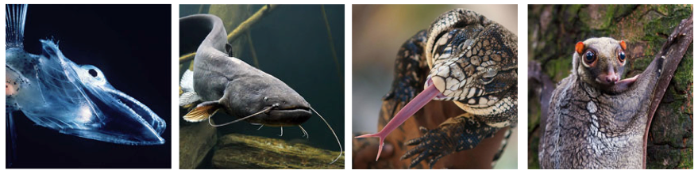
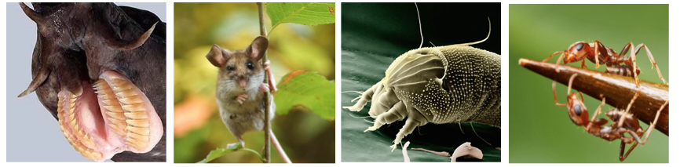

Endogenous CRESS virus (ECV) data
Sequences derived from CRESS DNA viruses commonly occur in metazoan genomes. These endogenous viral elements provide unique information about the evolution and biology of the Cressdnaviricota, being similar in some ways to 'viral fossils'.
CRESS-GLUE represents and organises the fossil record of CRESS DNA viruses.
You can access sequence data and other data related to the fossil record of CRESS DNA viruses in this repository. These web pages provide a description of CRESS-GLUE's paleovirus component, and quick links to specific data items.

Some of the species in which we identified EVEs that are derived from circoviruses, left to right: icefish, catfish, black & white tegu, galago.
Relevance to viral metagenomics
The EVE sequences in CRESS-GLUE can provide a useful resource for those interested in identifying and characterising circoviruses in metagenomic datasets.
Firstly, these sequences be used to exclude any potential 'false positive' hits (i.e. sequences that seem to represent new circoviruses but in fact derive from genomic DNA).
In addition, when new circovirus species are identified, inclusion of EVEs in phylogenetic analyses can often provide useful information about their broader ecology and evolution, including (uniquely) their long-term evolution. For examples see Dennis et al. (2018), and Kinsella et al. (2020).
Where do the ECV data come from?
EVE sequences were recovered from whole genome sequence (WGS) assemblies via database-integrated genome screening (DIGS) using the DIGS tool.
All data pertaining to this screen are included in this repository, or in the associated "DIGS-for-EVEs" project.
- The complete list of vertebrate genomes screened can be found here.
- The complete list of invertebrate genomes screened can be found here.
- The set of parvovirus polypeptide sequences used as probes can be found here.
- The final set of parvovirus and EPV polypeptide sequences used as references can be found here.
- Input parameters for screening using the DIGS tool can be found here.
Paleovirus-specific schema extensions
The paleovirus component of CRESS-GLUE extends GLUE's core schema to allow the capture of EVE-specific data. These schema extensions are defined in this file and comprise two additional tables: 'locus_data' and 'refcon_data'. Both tables are linked to the main 'sequence' table via the 'sequenceID' field.
The 'locus_data' table contains information pertaining to individual EVE sequences: e.g. species in which they occur, genome assembly version, genomic location(i.e. scaffold, location coordinates, and orientation).
The 'refcon_data' table contains information pertaining to our ECV reference sequences, which we have constructed in an effort to reconstruct, as closely as possible, the sequences of the progenitor viruses that gave rise to EVEs.
ECV reference sequences and data
We constructed reference sequences for using alignments of ECV sequences derived from the same initial germline colonisation event - i.e. orthologous elements in distinct species, and paralogous elements that have arisen via intragenomic duplication of ECV sequences.
Reference sequence data in tabular format can be found at the following links:
- ECVs derived from genus Circovirus
- ECVs derived from genus Cyclovirus
- ECVs derived from unclassified CRESS DNA viruses
Nucleotide level data:
| Taxonomic group | Tabular data | Full-length ECV nucleotides | Full-length ECV |
|---|---|---|---|
| Genus Circovirus | 2020-07-15 | FASTA MSA | Individual FASTA |
| Genus Cyclovirus | 2020-07-15 | FASTA MSA | Individual FASTA |
| Unclassified CRESS | 2020-07-15 | FASTA MSA | Individual FASTA |
Protein level data:
| Taxonomic group | Rep protein | Rep protein | Cap protein | Cap protein |
|---|---|---|---|---|
| Genus Circovirus | FASTA MSA | Individual FASTA | FASTA MSA | Individual FASTA |
| Genus Cyclovirus | FASTA MSA | Individual FASTA | FASTA MSA | Individual FASTA |
Multiple sequence alignments
Multiple sequence alignment constructed in this study are linked together using GLUE's ‘alignment tree’ data structure. Alignments in the project include:
{kind=link}
- A single ‘root’ alignment constructed to represent proposed homologies between representative members of major CRESS virus lineages (including extinct lineages represented only by ECVs).
- ‘Genus-level’ alignments constructed to represent proposed homologies between the genomes of representative members of specific CRESS virus genera and ECV reference sequences.
- ‘Tip’ alignments in which all taxa are derived from a single ECV lineage.

Some more of the species in which we identified EVEs derived from CRESS DNA viruses, left to right: hagfish, Ryuku mouse, dust mites, Pseudomyrmex ants.
Phylogenetic trees
We used GLUE to implement an automated process for deriving midpoint rooted, annotated trees from the alignments included in our project.
Trees were constructed at distinct taxonomic levels:
- Recursively populated root phylogeny (Rep)
- Genus-level phylogenies
- ECV lineage-level phylogenies
Raw ECV sequences and data
These are the raw data generated by database-integrated genome screening (DIGS). The tabular files contain information about the genomic location of each EVE. EVEs were classified by comparison to a polypeptide sequence reference library designed to represent the known diversity of CRESS viruses - this includes extinct lineages represented only by endogenous viral elements (EVEs).
These data were obtained via DIGS performed in vertebrate genome assemblies downloaded from NCBI genomes (2020-07-15).
| Taxonomic Group | ECV locus data in tabular format | Individual FASTA files |
|---|---|---|
| Genus Circovirus | 2020-07-15 | 2020-07-15 |
| Genus Cyclovirus | 2020-07-15 | 2020-07-15 |
| Unclassified CRESS | 2020-07-15 | 2020-07-15 |
Nomenclature for ECVs
We have applied a systematic approach to naming ECV, following a convention developed for endogenous retroviruses (ERVs). Each element was assigned a unique identifier (ID) constructed from a defined set of components.
The first component is the classifier ‘ECV’ (endogenous CRESS virus element).
The second component is a composite of two distinct subcomponents separated by a period: (i) the name of ECV group; (ii) a numeric ID that uniquely identifies the insertion. The numeric ID is an integer identifies a unique insertion locus that arose as a consequence of an initial germline infection. Thus, orthologous copies in different species are given the same number. Where an ECV lineage has been established via intragenomic amplication of ECV, distinct duplicates are identified by numbers after the decimal point.
The third component of the ID defines the set of host species in which the ortholog occurs.
Related Publications
Kinsella CM, Bart A, Deijs M, Broekhuizen P, Kaczorowska J, Jebbink MF, van Gool T, Cotten M, and L van der Hoek. (2020)
Entamoeba and Giardia parasites implicated as hosts of CRESS viruses.
Nat Commun. Sep 15;11(1):4620. doi: 10.1038/s41467-020-18474-w. [view]
Dennis TPW, de Souza WM, Marsile-Medun S, Singer JB, Wilson SJ, and RJ Gifford (2019)
The evolution, distribution and diversity of endogenous circoviral elements in vertebrate genomes.
Virus Research [view]
Dennis TPW, Flynn PJ, de Souza WM, Singer JB, Moreau CS, Wilson SJ, and RJ Gifford (2018)
Insights into circovirus host range from the genomic fossil record.
Journal of Virology [view]
Singer JB, Thomson EC, McLauchlan J, Hughes J, and RJ Gifford (2018)
GLUE: A flexible software system for virus sequence data.
BMC Bioinformatics [view]
Zhu H, Dennis T, Hughes J, and RJ Gifford (2018)
Database-integrated genome screening (DIGS): exploring genomes heuristically using sequence similarity search tools and a relational database. [preprint]
Gifford RJ, Blomberg B, Coffin JM, Fan H, Heidmann T, Mayer J, Stoye J, Tristem M, and WE Johnson (2018)
Nomenclature for endogenous retrovirus (ERV) loci.
Retrovirology [view]
Katzourakis A. and RJ. Gifford (2010)
Endogenous viral elements in animal genomes.
PLoS Genetics [view]